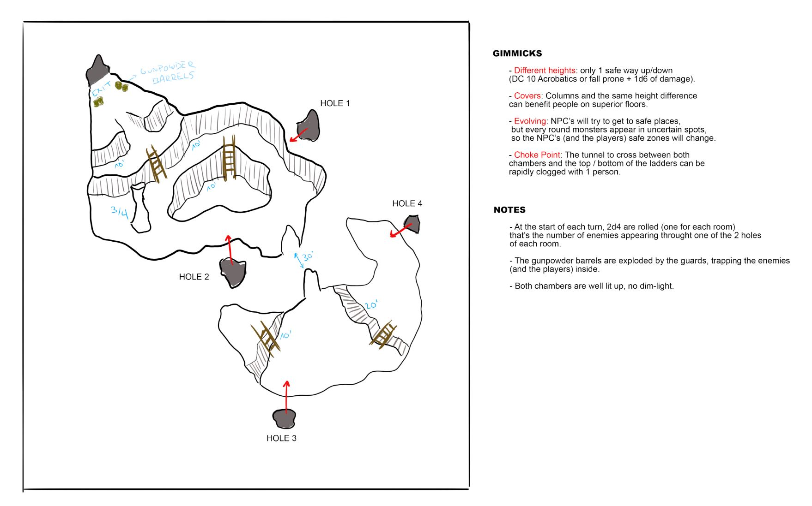

Windswept Ridges Cavern
Context
This map takes place in a 2-cavern room, a part of a labyrinth of tunnels and rooms that undergo the Windswept Ridges, a hostile and inhospitable mountain range that holds within it an ancient place, now protected by insectoid creatures that call these caves home. Players will enter with their party to mine in both caves, not knowing exactly what they are looking for as the leaders do not share information. Within half a day of mining, they will have attracted the attention of the creatures, who will begin to emerge from the tunnels to do their bidding. When they appear, the guards explode barrels near the entrance to the rooms, causing them to collapse and locking the group in with the creatures. The party will try to protect as many NPCs as possible until the creatures retreat.
Creatures
These creatures are pretty straight forward: they don't present a small threat alone, but while working with more of their kind they can overwhelm anyone pretty quick. They attack twice, ranged or melee, and have advantage with Pact Tactics. They will spawn at the top of the round, 1d4 each room, substracting the number rolled for any tunnel the party destroys, so if they collapse 2 tunnels in the first room, 1d4 - 2 creatures will spawn. The fight ends in 5 rounds (when the creatures retreat) or the tunnels they use are collapsed.
Gimmicks
For this map, I went with the elevation, cover and evolving gimmicks:
- Elevation: in both rooms we have 3 levels of height, and only 1 ladder to move between them safely. With this, we're creating "safe" and "danger" zones, along with chokepoints for the players, but not the enemies since they can climb.
- Covers: cover in this map are elevation, being in an upper level means enemies have a much harder time hitting and reaching you. But when I talked about safe and danger zones, ranged people can easily go to a higher level and just shoot downwards. But in the next round, maybe one enemy appears from a tunnel behind you and makes your safe zone not safe anymore. With that, we make melee people trying to protect as much npcs as possible, while ranged people try to help too but mantaining a distance with safes zones, ultimately using melee people as "cover" for new enemies.
- Evolving: Althought the map doesn't change, the zones change each round. NPCs try to go to safe zones, while the party is trying to protect them, but the next round they could see themselves flanked. Enemies spawning from multiple locations means the party has to adapt to the new enemies quickly, creating a dynamic combat.
Sketch
This was the first sketch of the battle map. I focused into a multi-layered 2-chamber cavern, with multiple holes where the enemies will appear each round. I tweaked the form and the ladders a little bit for good flow, and taking into account that the players will start separated (3-2) to add the tension of not knowing what's going on in the other side.
Final Map